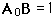
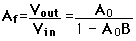
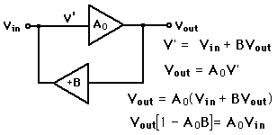

Positive Feedback
The use of positive feedback is useful for producing oscillators. The condition for positive feedback is that a portion of the output is combined
in phase with the input. For an amplifer with positive feedback the gain
is given by the expression
below.
| The large
open loop gain
of an op-amp makes
it inevitable that the
condition

will be reached, and the gain expression

becomes infinite.
| 
|
Practically speaking, the gain which applies at low signal amplitudes will be reduced until the output amplitude reaches some constant value. However, that limiting value will be independent of input, allowing the circuit to produce a designed output.
|
Index
Electronics concepts
Op-amp concepts
Feedback concepts |